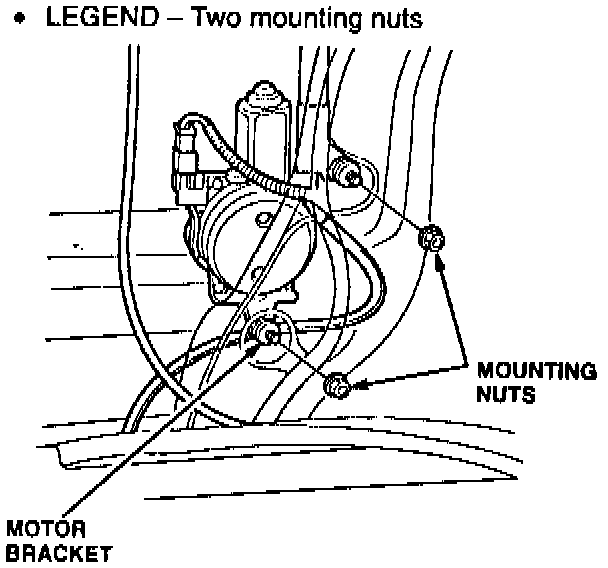
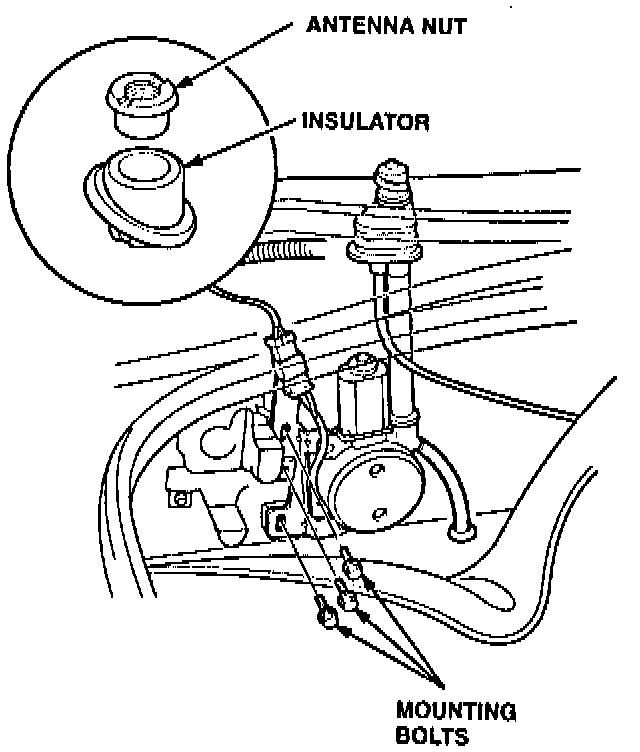

Antenna Mast Kit Replacement (NSX Only)
The Antenna Mast Kit includes the mast, an improved antenna nut (O-ring type), and an insulator that provides a seat for the O-ring.1. Turn the ignition switch ON; then turn the radio on to extend the antenna mast.
2. Pull the antenna mast out of the antenna tube; then discard the antenna mast.

3. Remove the antenna seal, and discard it.
4. Insert the new antenna mast into the antenna tube; then turn the radio off to retract the antenna mast.
5. Loosen the three mounting bolts for the antenna motor assembly.

6. Install the new insulator and antenna nut provided with the kit. Tighten the antenna nut to 2.3 N-m (0.23 kg-m, 20 lb.in.) using the special tool and a torque wrench.
7. Tighten the three mounting bolts.